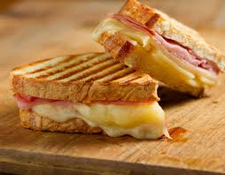

Tasty Ham and Cheese toastie

Making the best Roasties
Ingredients
- 2 slices of thick bread
- 30g of your favourite cheese, sliced or grated
- 2 slices of ham
- 2 tablespoons of mayonaise
- [Optional] 1 teaspoon of english mustard
Steps
- Make up the ham and cheese toastie as if making a standard sandwich
- If you like a bit of heat mix the grated/sliced cheese with the mustard
- "Butter" the outside of the sandwich with the mayonaise, this will prevent the bread from cooking too quickly
- Place on a grill tray and cook for 4-5 mins per side or until golden brown and crunchy
- [Optional] For those who like an extra cheesey toastie, once it is cooked, layer another layer of cheese on the top
and put back under the grill until fully melted
- Slice into halves and enjoy!